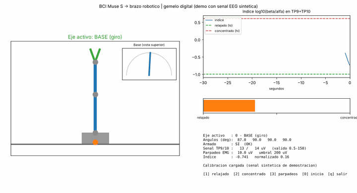

Interfaz cerebro-computador para un brazo robótico
La señal EEG de una diadema Muse S se procesa en Python y controla un brazo de tres ejes con pinza a través de un ESP32. Un parpadeo voluntario cambia de articulación, la relación de potencia beta/alfa define el ángulo y una capa de seguridad desarma el brazo si la señal es mala o la cabeza se mueve.
Pensado como tecnología de asistencia para personas con ELA; es un prototipo experimental, no un dispositivo médico.
Python, NumPy, SciPy, BrainFlow, Matplotlib, ESP32, UDP